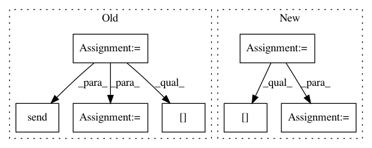

76f937a915bff2383b830cd63c9b38d32f9fdee8,test/test_api_grid.py,GridAPITest,test_grid_search,#GridAPITest#,27
Before Change
self.assertTrue("James" in response["grid-nodes"])
def test_grid_search(self):
nodes = []
for (node_id, port) in zip(IDS, PORTS):
node = gr.WebsocketGridClient(
hook, "http://localhost:" + port + "/", id=node_id
)
node.connect()
nodes.append(node)
x = th.tensor([1, 2, 3, 4, 5]).tag("//simple-tensor").describe("Simple tensor")
y = (
th.tensor([[4], [5], [7], [8]])
.tag("/ǘd-tensor")
.describe("2d tensor example")
)
z = (
th.tensor([[0, 0, 0, 0, 0]])
.tag("//zeros-tensor")
.describe("tensor with zeros")
)
w = (
th.tensor([[0, 0, 0, 0, 0]])
.tag("//zeros-tensor")
.describe("tensor with zeros")
)
x_s = x.send(nodes[0])
y_s = y.send(nodes[1])
z_s = z.send(nodes[2])
w_s = w.send(nodes[0])
x_s.child.garbage_collect_data = False
y_s.child.garbage_collect_data = False
z_s.child.garbage_collect_data = False
After Change
self.assertTrue("james" in response["grid-nodes"])
def test_grid_search(self):
nodes = self.connect_nodes()
alice, bob, james = nodes["alice"], nodes["bob"], nodes["james"]
simple_tensor = (
th.tensor([1, 2, 3, 4, 5]).tag("//simple-tensor").describe("Simple tensor")
)
In pattern: SUPERPATTERN
Frequency: 3
Non-data size: 7
Instances
Project Name: OpenMined/Grid
Commit Name: 76f937a915bff2383b830cd63c9b38d32f9fdee8
Time: 2019-08-31
Author: mariannelinharesm@gmail.com
File Name: test/test_api_grid.py
Class Name: GridAPITest
Method Name: test_grid_search
Project Name: uuazed/numerapi
Commit Name: 80e4f15860b6b002f2dd3f420eaeff63e202eb2f
Time: 2017-11-18
Author: wolfgang@steitz.me
File Name: numerapi/numerapi.py
Class Name: NumerAPI
Method Name: upload_predictions
Project Name: openai/baselines
Commit Name: d80b075904de038bc1c96ca2ea025889d6995fca
Time: 2019-08-29
Author: wrona.tomasz@windowslive.com
File Name: baselines/common/vec_env/subproc_vec_env.py
Class Name:
Method Name: worker